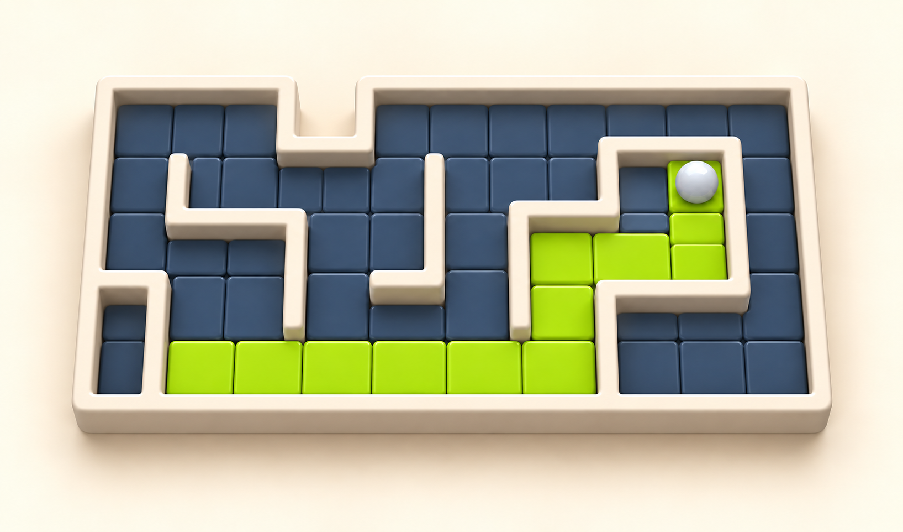

Maze Tint
Slide the ball through mazes and paint every open cell.

About the game
Maze Tint is a route-planning puzzle about a ball that paints a maze. Guide it through every open cell on the board. It leaves paint along its path, and the level is complete when no unpainted cells remain.
Swipe up, down, left or right to choose a direction. The ball keeps sliding until it reaches a wall or the edge of the board. You cannot stop it halfway down a corridor, so each turn starts from the place where the previous slide ended.
Use walls as stopping points and travel over painted paths again when your route calls for it. A long slide can cover several cells, but short branches also need to be reached. Look at where each move will leave the ball before choosing the next direction. The goal is to find a sequence of slides that brings paint to every accessible part of the maze.
How to play
- 1.
- Swipe across the board up, down, left or right.
- 2.
- The ball slides to a wall or board edge and paints the cells along its path.
- 3.
- Choose the next direction after it stops.
- You can cross painted cells again.
- 4.
- Paint every open cell to complete the level.